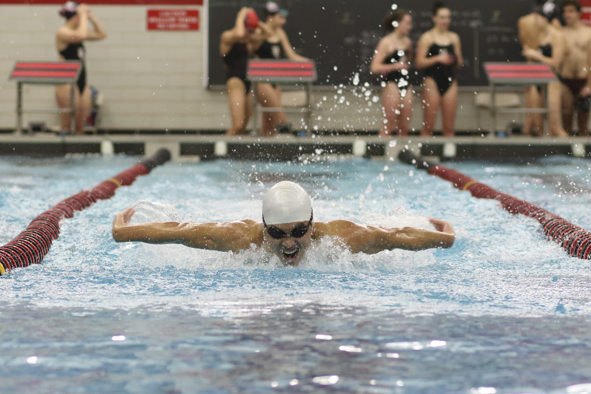
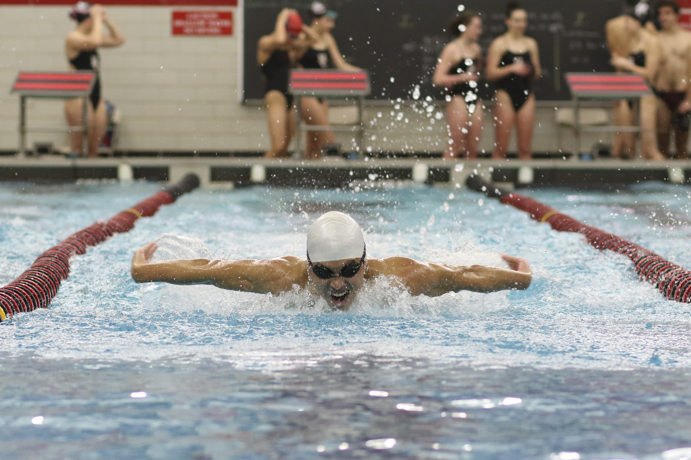
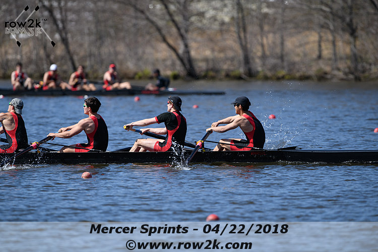
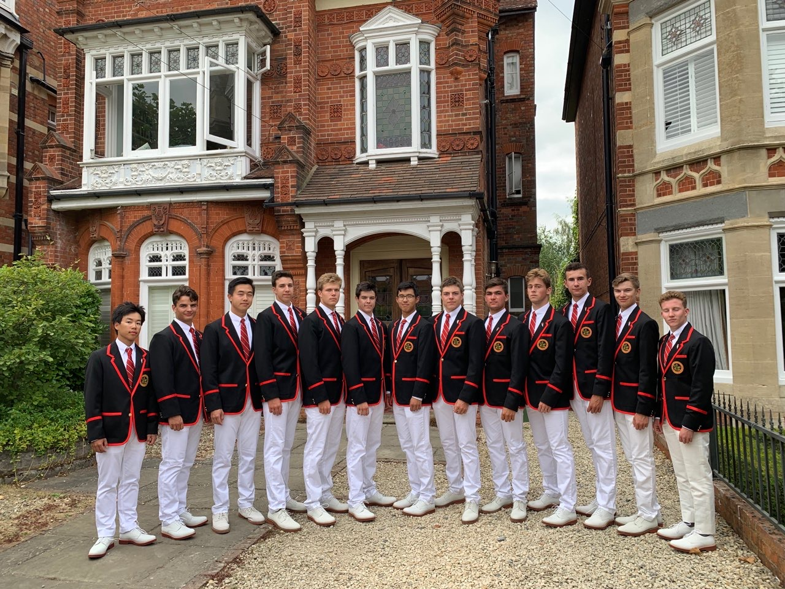
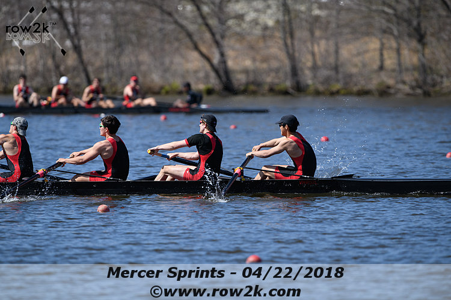
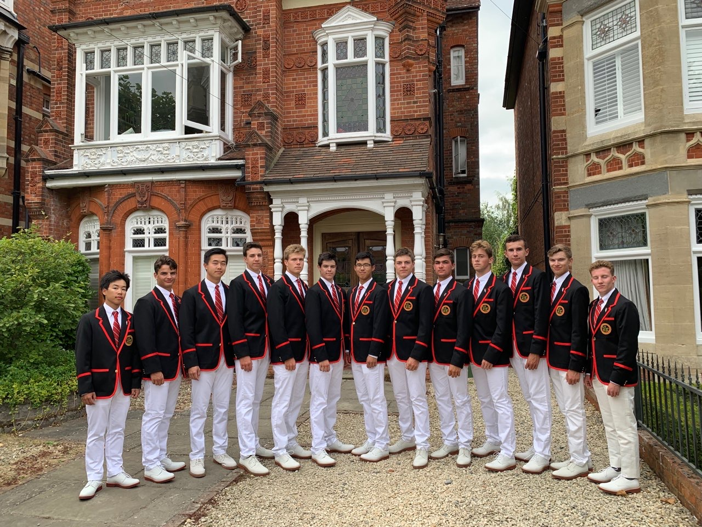

My Portfolio
My name is Kevin Shao, and this is my portfolio! I live in Los Angeles, California, but I went to a boarding school in New Jersey for high school and then ended up at MIT, where I just finished my first year.
Click here to fetch all comments from servlet:
Input here to select number of comments returned:
LoginIn high school, I had the chance to try several sports, two of which have played a pretty big part in who I am: swimming and rowing. Click below for more information!
I began swimming at the age of 12. For most sports, I think that's pretty normal. For swimming, it's super
late. Accordingly, I was never too good at it. However, the sport did teach me most of what I consider to
be my self-discipline, and is probably the reason I joined the crew team. Throughout high school, I found
a family in the swim team, making me grateful for sticking with it.


I began rowing as a freshman in high school, where we could row on the (usually) beautiful Mercer Lake,
home to the women's national team. Somehow falling in love with the long hours and quirky nature of the sport
(e.g. going backwards), I continued on to race on the varsity squad in my junior and senior years.

One of the most unique experiences I had was qualifying to race at the Henley Royal Regatta, an annual event in England that draws the best amateur crews. Despite getting knocked out on Day 2 of the single elimination tournament, the trip was a very exciting experience.

As a recruit to MIT's Lightweight Crew team, I hope to continue with the sport for several more years, despite suddenly being way out of my depth in terms of ability.

One of the most unique experiences I had was qualifying to race at the Henley Royal Regatta, an annual event in England that draws the best amateur crews. Despite getting knocked out on Day 2 of the single elimination tournament, the trip was a very exciting experience.

As a recruit to MIT's Lightweight Crew team, I hope to continue with the sport for several more years, despite suddenly being way out of my depth in terms of ability.
Click here to get a random message: